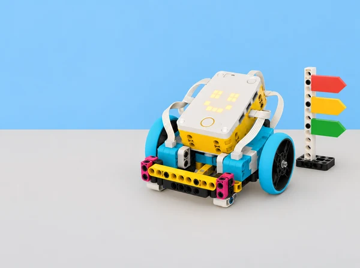
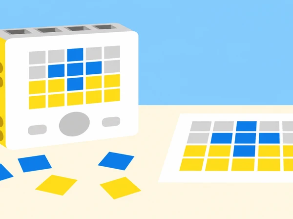

Missatges que arriben
🏷️ Python: maquinari, programari i comunicació
🌱 Situació, repte i intenció
L’encàrrec és dissenyar un codi de senyals fàcil d’aprendre, escriure’l en Python, comprovar-lo amb diferents persones i condicions, i explicar què pot i què no pot comunicar el prototip.
Aquesta situació adapta les sis lliçons de la unitat 1 Communicating Ideas: Hardware and Software de LEGO Education Introduction to Python Programming · Course 1: Importing Libraries, Communicating with Light, Pair Programming, Communicating with Sounds, Digital Sign i Ideas to Support Your Design. Afig una setena sessió pròpia d’orientació professional, marcada com a ampliació i no comptada com una lliçó d’eixa unitat.
El recorregut manté el fil d’introducció a les biblioteques, ús de matriu lluminosa i so, treball en parelles, depuració elemental, missatge multimodal, revisió amb feedback i connexió amb professions. El context i la producció són propis, i la resposta sonora sempre és opcional.
🎯 Aprenentatges i vocabulari
- Descriure la relació entre maquinari (hub, ports, matriu, altaveu i dispositius) i programari (instruccions Python que organitzen la seua resposta).
- Explicar que una biblioteca és codi reutilitzable que aporta funcions, i que importar-la permet accedir-hi quan la versió instal·lada ho admet.
- Obrir, llegir i executar un programa curt; localitzar errades senzilles de nom, ordre, indentació o crida amb ajuda de la consola.
- Crear una seqüència lluminosa amb patró, durada i pausa deliberats; distingir una seqüència fixa d’una entrada interactiva.
- Crear i comparar patrons sonors curts, regular volum i oferir una alternativa visual equivalent sense so.
- Descompondre un missatge en estats i senyals; provar si el codi s’interpreta correctament sense dependre només del color, el so o la memòria.
- Practicar programació per parelles alternant qui escriu i qui revisa, verbalitzar prediccions i citar codi o idees reutilitzats quan corresponga.
- Recollir feedback, documentar una modificació i relacionar les tasques amb funcions professionals de programació, disseny d’interacció, accessibilitat i suport tècnic.
Maquinari: parts físiques que capten o produeixen accions. Programari: instruccions i dades que utilitza el dispositiu. Biblioteca: conjunt de codi reutilitzable. Importar: incorporar una biblioteca al programa. Matriu: conjunt de píxels lluminosos del hub. Depurar: investigar una diferència entre el resultat esperat i l’observat.
# Fragment conceptual de Python; adapteu la biblioteca a l'app SPIKE disponible.
# primer es defineix el senyal; després es prova una instrucció cada vegada
missatge = "AJUDA"
print(missatge)El fragment és Python general i no controla maquinari. Els noms d’importació i les funcions per a matriu, so i botons varien entre versions de SPIKE; el professorat comprova l’exemple corresponent en la Knowledge Base de l’app local abans d’executar-lo.
🧰 Materials i preparació
Un set SPIKE Prime per parella, hub carregat, dispositiu amb l’app SPIKE i editor Python disponible, diari d’enginyeria, targetes mate amb símbols grans i paraules curtes, cartó per a una base de mostrador, retoladors, cinta de paper, temporitzador i versions impreses dels patrons. Un robot mòbil no és imprescindible: el hub es pot usar fixat en un suport estable, que és més pertinent per a un senyal.
No calen materials externs de LEGO ni s’atribueix cap capacitat de reconeixement automàtic a la maqueta.
Abans de la primera sessió, confirmeu connexió al hub, idioma/layout de l’editor, API Python present i accés a consola. Proveu una expressió innocent abans de connectar motors; en aquesta situació no necessitem cap motor. Consulteu els noms oficials de les funcions de matriu i so de la vostra versió. Prepareu un exemple que funcione i còpies amb un error intencional de codi; eviteu errors que puguen activar un actuador. Definiu un nivell baix de volum i una alternativa sense so.
Formeu parelles amb rols que canvien a cada sessió: pilota (escriu o manipula el dispositiu) i navegant (llegeix el criteri, prediu i registra). Reserveu torns perquè ambdues persones escriguen codi i expliquen decisions. Abans d’usar el senyal amb persones, expliqueu que és un prototip d’aula, no un sistema operatiu del centre ni un canal d’emergència.
📅 Seqüència didàctica
La caixa d’eines del programa (45 min)
Fase 1 · Activem i prediem
Fase 2 · Explorem i construïm
Inventari del set (7 min): obriu un set per parella i localitzeu el hub, els tres motors i els tres sensors. Poseu les peces damunt la taula, identifiqueu-les sense connectar cap motor i completeu al diari tres columnes: «component», «què pot fer segons la documentació» i «què encara hem de comprovar». Torneu a col·locar cada peça al seu espai abans d’obrir l’editor; no compartiu peces entre sets.
Fase 3 · Expliquem i registrem
Fase 4 · Apliquem i millorem
Fase 5 · Comprovem i reflexionem
La llum pot donar informació? (45 min)
Fase 1 · Activem i prediem
Fase 2 · Explorem i construïm

Fase 3 · Expliquem i registrem
Fase 4 · Apliquem i millorem
Fase 5 · Comprovem i reflexionem
Autoavaluació (4 min): expliqueu per a què serveix la pausa, què indica el comentari que comença per # i quina diferència heu observat entre mostrar una icona i desplaçar una paraula. Anoteu una errada que heu resolt, una prova que falta i una modificació mesurable; una prova amb una parella no és suficient per afirmar que el codi serà accessible per a tothom.
Una parella, un programa revisable (45 min)
Fase 1 · Activem i prediem
Fase 2 · Explorem i construïm
Primer torn (12 min): trieu una icona del repertori que mostra la Knowledge Base i escriviu-la en un programa curt. La persona que pilota l’editor explica què canviarà abans d’escriure; la navegant comprova nom de la constant, ordre de les línies i crida abans de prémer executar. Mostreu el resultat al grup des del hub aturat i estable.
Fase 3 · Expliquem i registrem
Fase 4 · Apliquem i millorem
Joc de depuració (10 min): en una còpia del programa, la pilot introdueix un error segur en el nom d’una icona o en l’ordre de dues instruccions; no s’activen motors ni mecanismes. La navegant descriu què esperava, llegeix la línia indicada per la consola i proposa una correcció sense prendre el teclat. Canvieu els papers i feu una segona ronda. Tanqueu distingint entre reutilitzar una idea o fragment documentat i presentar-lo com a propi; afegiu atribució quan corresponga.
Fase 5 · Comprovem i reflexionem
Autoavaluació (8 min): cada membre anota què ha fet en cada rol, com ha ajudat la parella i quina pràctica vol millorar. Puntueu de l’1 al 3 la gestió del temps i del material; comproveu que les dues persones han escrit codi, que el programa acaba en un estat conegut i que totes les peces tornen al seu espai. La preferència del grup no s’interpreta com una avaluació individual.
Sons, pauses i alternatives (60 min)
Fase 1 · Activem i prediem
Repte sense paraules (5 min): en parelles, una persona comunica un ordre de tres targetes de colors sense parlar ni escriure; primer pot mostrar la pila i després ha d’inventar un codi sonor acordat. Predigueu quina part de la informació es perd si no es coneix el codi. Qualsevol alumne pot triar una alternativa silenciosa.
Fase 2 · Explorem i construïm
Beep del hub (15 min): obriu una plantilla nova i seleccioneu la funció de beep que apareix en la Knowledge Base de l’app instal·lada. En una taula, relacioneu els arguments amb freqüència, durada en mil·lisegons i volum. Executeu una nota breu i canvieu només un argument per prova; anoteu valor i resultat. Manteniu el volum baix i no connecteu actuadors.
Fase 3 · Expliquem i registrem
Partitura i explicació (12 min): composeu una seqüència original de tres sons; representeu-la amb una partitura de símbols i escriviu el codi de manera que cada crida tinga un comentari breu. Expliqueu què representa cada valor numèric i quina biblioteca s’importa. Afegiu a cada missatge una alternativa visual i textual equivalent.
Fase 4 · Apliquem i millorem
canvieu una sola opció i documenteu-ho. Si el grup ho tria, creeu un patró curt amb tres notes o efectes sense reproduir una cançó comercial. Un equip revisor segueix la partitura i comunica què ha entés; cap so és obligatori i no s’usen alarmes sobtades.
Fase 5 · Comprovem i reflexionem
Autoavaluació (5 min): compareu beep del hub i so de l’app: on s’escolta cadascun i quin tipus de paràmetres o nom necessita? Anoteu una prova de programació, una limitació d’audició/entorn i l’alternativa visual o textual que conserva el missatge.
El cartell digital de la biblioteca (90 min)
Fase 1 · Activem i prediem
Definir el missatge (10 min): la biblioteca vol anunciar una activitat fictícia de la setmana cultural —per exemple, intercanvi de llibres o lectura de relats locals— i necessita un cartell que cride l’atenció sense confondre’s amb un avís oficial. Trieu públic, missatge breu i acció esperada; feu un esbós de paper i identifiqueu què pot aportar una versió lluminosa o sonora. No anuncieu horaris reals ni disponibilitat que el prototip no puga verificar.
Fase 2 · Explorem i construïm
Storyboard i proves de comprensió (12 min): compareu el cartell estàtic amb el senyal digital. Representeu la seqüència: iniciar, mostrar la icona, desplaçar el text, opcionalment emetre un so suau i acabar o tornar a l’inici. Una altra parella interpreta l’esbós sense que li expliquen el context; reviseu paraules ambigües i prepareu també una lectura sense so.
Fase 3 · Expliquem i registrem
La maqueta no usa sensors per afirmar que l’activitat ha començat ni que hi ha places disponibles.
Fase 4 · Apliquem i millorem
Ronda de proves (20 min): proveu la icona, la frase i el conjunt; feu també una interrupció i torneu a iniciar el programa. Registreu la interpretació del missatge i si la durada dona temps per llegir-lo.
Fase 5 · Comprovem i reflexionem
Millorar una idea amb feedback (45 min)
Fase 1 · Activem i prediem
Fase 2 · Explorem i construïm
Fase 3 · Expliquem i registrem
Conversa i selecció (5 min): compareu els comentaris rebuts, identifiqueu una fortalesa que convé preservar i trieu una proposta de revisió. Si no l’adopteu, escriviu per què i quina altra prova necessiteu.
Fase 4 · Apliquem i millorem
Fase 5 · Comprovem i reflexionem
Autoavaluació (5 min): al diari, expliqueu quin feedback heu donat i rebut, com l’heu utilitzat i com vos heu sentit en els dos papers. Puntueu de l’1 al 3 la gestió del temps i la cura del set; tanqueu amb una acció concreta per a millorar la pròxima revisió entre iguals.
Professions que uneixen codi i persones · ampliació pròpia (45–60 min)
Fase 1 · Activem i prediem
Mapa de tasques (10 min): mireu el treball fet i assigneu-ne parts a funcions professionals —desenvolupar software, dissenyar una interacció, provar accessibilitat, documentar, reparar dispositius— sense afirmar que una persona real fa una única funció.
Fase 2 · Explorem i construïm
Fase 3 · Expliquem i registrem
Producte (15 min): creeu una fitxa de professió connectada amb una tasca del projecte, una competència observable i una pregunta oberta.
Fase 4 · Apliquem i millorem
Galeria i síntesi (5–20 min): presenteu prototips i professions en una mostra de classe, amb opció d’exposar text, diagrama o explicació oral.
Fase 5 · Comprovem i reflexionem
Tanqueu relacionant un canvi de disseny amb una necessitat d’usuari i una responsabilitat de qui construeix tecnologia.
🧪 Evidències i avaluació
El portafolis inclou diagrama maquinari/programari, nota de versions i imports, traça d’un programa inicial, pseudocodi, storyboard, taula d’estats i senyals, programa Python comentat, dues proves de depuració, observacions anònimes de comprensió, iteració justificada, pauta de parelles i fitxa de connexió professional. El producte és un prototip de senyal digital de taula més una targeta d’ús que explique la selecció d’estat, alternatives de percepció, procediment d’aturada i limitacions.
Avalueu amb quatre criteris: comprensió del sistema (diferencia hardware/software i identifica per què importa la biblioteca); programació (construeix una seqüència de llum/so coherent i localitza una errada elemental);
♿ Participació, accessibilitat i seguretat
Presenteu la informació amb text, símbol, llum i opció sonora suau; mai feu que el color siga l’única pista. Oferiu patrons imprimibles, lectura de codi en parella, text ampliat, pauses, rols alternatius i prova sense sons. Eviteu parpellejos ràpids o seqüències que puguen causar molèstia; deixeu que qualsevol alumne observe o trie una altra manera de participar. No capteu dades personals, imatges, converses ni presència de persones. Manteniu el model en una taula estable; els motors no són necessaris.
El senyal és una simulació didàctica, no alarma, servei de biblioteca real ni instrucció d’evacuació.
🔗 Referents i adaptació
Adapta les sis lliçons oficials de la unitat Communicating Ideas: Hardware and Software de LEGO Education *Introduction to Python Programming · Course 1*: Importing Libraries, Communicating with Light, Pair Programming, Communicating with Sounds, Digital Sign i Ideas to Support Your Design. Afig una setena sessió pròpia, Career Connections, com a ampliació professional, no com a lliçó de la unitat. La guia consultada treballa amb SPIKE Prime, Python, journals i parelles;
aquesta adaptació conserva eixos objectius, canvia el context per un senyal escolar simulat i produeix procediments, exemples, instruments i imatge propis. No es reprodueixen materials d’alumnat ni codi complet. Les APIs d’SPIKE depenen de la versió i cal validar-les localment.